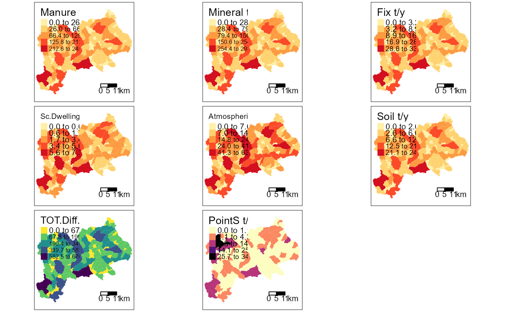

Map showing the mean load input by source
Usage
input_maps(
catch_data,
annual_data,
sh_file,
basin_name,
plot.type,
style_map = "fisher",
scale_barTextS = 0.7,
legend_position = 1
)Arguments
- catch_data
data frame. Definition of the topological sequence of catchments.
- annual_data
data frame. Sources of nutrient for each year and catchments.
- sh_file
sf object. The spatial information.
- basin_name
character. The title of the map
- plot.type
character. Alternatives of the map: input load (kt) by type divided by year and catchment. “gr1”: by km2; “gr2”: by year/km2.
- style_map
character. Alternatives to create the intervals in the maps. Chosen style: one of "fixed", "sd", "equal", "pretty", "quantile", "kmeans", "hclust", "bclust", "fisher", "jenks".
- scale_barTextS
numeric. To modify the size of the text in the legend.
- legend_position
numeric. Legend position: 1 (default): "right", "bottom"; 2: "left", "up"; 3: "right", "bottom"; 4: "right", "up".
Examples
# \donttest{
# the data of the TN scenario
data(catch_data_TN)
data(annual_data_TN)
data(sh_file)
# The title of the plot
mapTitle <- "Time series for the Lay Basin"
# the Input Load Map by source type 1 (lines)
input_maps(catch_data_TN, annual_data_TN, sh_file, mapTitle, "gr1",
legend_position = 2)
#> Some legend labels were too wide. These labels have been resized to 0.61, 0.56, 0.51, 0.51. Increase legend.width (argument of tm_layout) to make the legend wider and therefore the labels larger.
#> Some legend labels were too wide. These labels have been resized to 0.61, 0.56, 0.51, 0.51. Increase legend.width (argument of tm_layout) to make the legend wider and therefore the labels larger.
#> Some legend labels were too wide. These labels have been resized to 0.61, 0.61. Increase legend.width (argument of tm_layout) to make the legend wider and therefore the labels larger.
#> Some legend labels were too wide. These labels have been resized to 0.61, 0.61, 0.61. Increase legend.width (argument of tm_layout) to make the legend wider and therefore the labels larger.
#> Some legend labels were too wide. These labels have been resized to 0.61, 0.61. Increase legend.width (argument of tm_layout) to make the legend wider and therefore the labels larger.
#> Some legend labels were too wide. These labels have been resized to 0.56, 0.51, 0.51, 0.51. Increase legend.width (argument of tm_layout) to make the legend wider and therefore the labels larger.
#> Some legend labels were too wide. These labels have been resized to 0.61, 0.61. Increase legend.width (argument of tm_layout) to make the legend wider and therefore the labels larger.

# the Input Load Map by source type 2 (lines & area)
input_maps(catch_data_TN, annual_data_TN, sh_file, mapTitle, "gr2",
legend_position = 2)
#> Some legend labels were too wide. These labels have been resized to 0.61. Increase legend.width (argument of tm_layout) to make the legend wider and therefore the labels larger.
# }